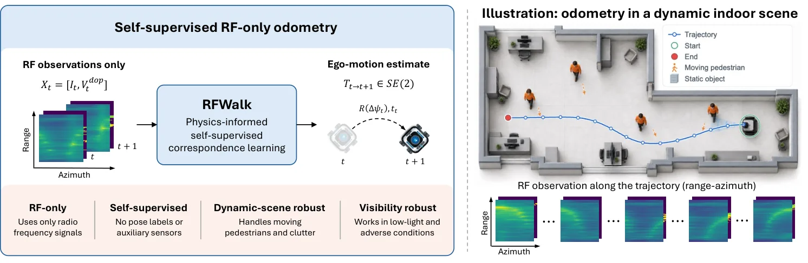
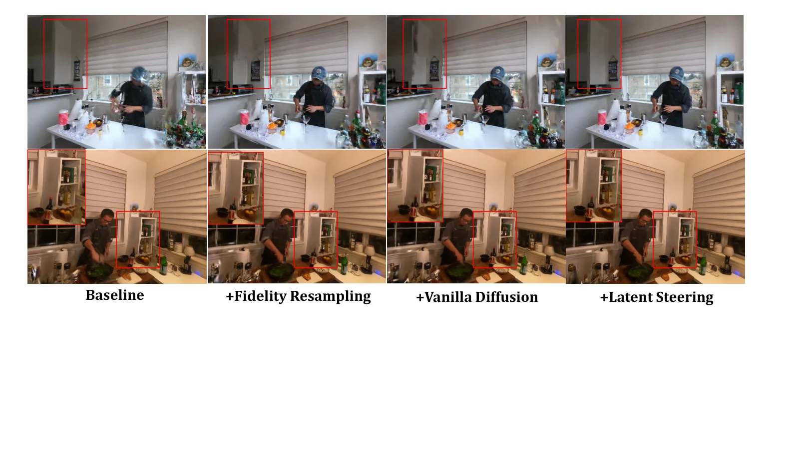
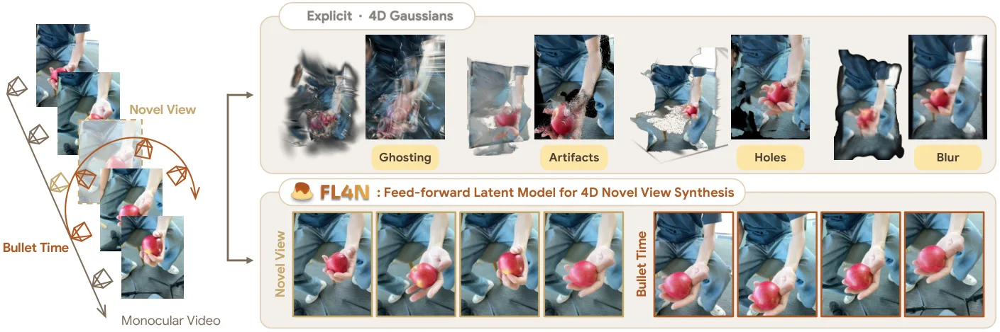
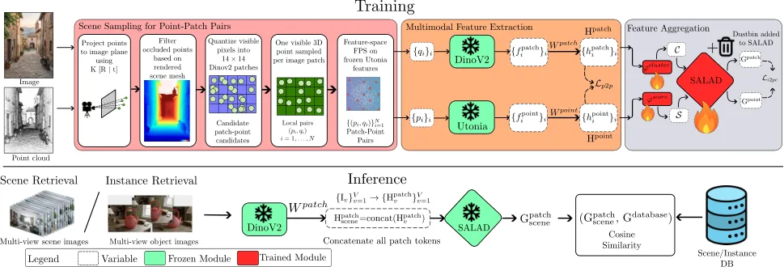
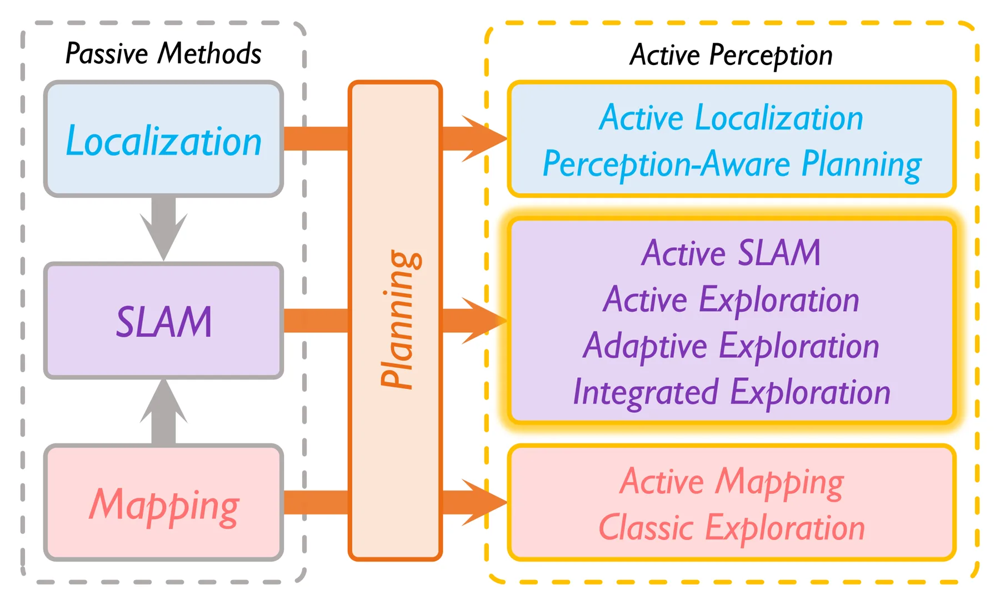

新论文 · 日期 2026-10-29 · score 17 · S层 · Geometry Foundation Models / 3D Foundation Models · cs.RO, cs.LG
内容级别：完整单篇海报
作者：Kunzhe Song, Jialuo Du, Jingkai Lin, Huacheng Zeng
评分 17/10
RF 里程计多普勒一致性自监督对应鲁棒 SE(2) 配准动目标抑制毫米波雷达
一句话工作总结：把“多普勒”从测速传感器改造成对应关系的局部物理校验：每条 RA 单元的软对应必须先满足 u^T δ ≈ −Δt·v_dop（容差带 0.02 m），再做置信度加权 Huber 配准。Radarize 静态 ATE 1.934 m（有监督基线 1.657 m），自建 60 GHz 动态场景 2.357 m vs 5.642 m（−58%），且动态从低到高误差只涨 0.93 m…
射频感知让机器人在黑暗、烟雾和粉尘里也能估计自身运动，但 RF 里程计很难做：多径和移动反射体会让帧间匹配高度歧义。已有方法往往依赖辅助惯性传感器或真值位姿监督。本文提出 RFWalk，一个自监督、纯 RF 的里程计框架：把 range-azimuth 帧间的稠密对应建模为时空图上的随机游走，并用时间循环一致性从未标注序列里学出来。为了排除“循环一致但物理上不成立”的对应，作者引入多普勒一致性损失，用 RF 传感器…
Radio-frequency (RF) sensing enables robot ego-motion estimation in darkness, smoke, and fog, yet RF odometry remains challenging because multipath and moving reflectors make cross-frame matching highly ambigu…

新论文 · 日期 2026-10-26 · score 14 · S层 · 3D/4D Spatial Perception · cs.CV, cs.CG
内容级别：完整单篇海报
作者：Beizhen Zhao, Nanjie Yao, Boyi Fu, Qingsong Yan
评分 14/10
稀疏视角 4D4D 高斯单视图扩散先验自校正闭环基元剪枝渲染效率
一句话工作总结：用冻结的单视图扩散模型当“伪观测生成器”，用当前 4D 高斯当“时空对应载体”，两个方向交替校正：锚点对齐 → latent 引导去噪 → 置信度门控的保真重采样（加密/剪枝）→ 下一轮。Neural 3D 上 PSNR 20.28、246 FPS、0.05M 高斯（Grid4D 18.30 / 80 FPS / 0.21M）。但要注意：统一预处理后才反超 SparseCam…
只有少量相机时，稀疏视角 4D 重建高度欠约束。生成先验能补出缺失外观，但视频模型迭代起来算力上不现实，单视图模型又会产生时间不一致的伪观测；更麻烦的是，把不确定的生成结果直接吸收进高斯优化常常造出冗余基元与漂浮伪影。为此作者提出 DUET4D：一个自校正的耦合引导框架。核心是让 4D 表示反过来引导生成先验，产生时空一致的监督：先从当前高斯证据构造序列对齐来引导 latent 复原，再用 Sequential F…
Sparse-view 4D reconstruction is highly under-constrained when only a few cameras are available. Generative priors can recover missing appearances, but video models are computationally impractical for iterativ…

新论文 · 日期 2026-10-26 · score 14 · S层 · 3D/4D Spatial Perception · cs.CV
内容级别：完整单篇海报
作者：Gabriel Adineera, Jinoh Kim
评分 14/10
动态高斯因子化网格混合专家对抗特征对齐4D 重建渲染效率
一句话工作总结：把“网格特征”和“坐标 MLP 专家”做成双向通道：对抗对齐拉分布、自适应门控传信息、残差反馈回写网格，再用四个属性专家（形变/旋转/不透明度/时间）解码成高斯更新。三数据集聚合 39.73 dB、85 FPS、18.9 MB（4D-GS 37.81 dB / 18.3 MB）；组件消融最大项是去掉坐标专家分支 −2.03 dB。注意聚合表跨三个数据集取平均、FPS 列有排版…
动态高斯重建需要紧凑的场景特征来支撑几何与外观的协同变化。因子化网格能提供高效的局部查询，但插值准确并不保证得到的动态属性在空间与时间上彼此兼容。作者提出 DimFlow，通过多分辨率网格与坐标专家分支之间的双向交互来学习这些特征：特征级对抗对齐连接两者分布，自适应融合传递互补信息，激活掩码残差反馈在训练中精修网格；四个属性专家分别组织形变、旋转、不透明度与时间信息，再交给高斯渲染。在 D-NeRF、HyperNe…
Dynamic Gaussian reconstruction requires compact scene features to support coordinated changes in geometry and appearance. A factorized grid provides efficient local queries, but accurate interpolation alone d…

新论文 · 日期 2026-10-27 · score 10 · S层 · 3D/4D Spatial Perception · cs.CV
内容级别：完整单篇海报
作者：Eunbeen Hong, Hyeonseo Yu, Honggyu An, Jooho Son
评分 14/10
前馈 4Dlatent 表示残差学习视角-时间解耦新视角合成实时渲染
一句话工作总结：冻结静态 latent NVS 基座，只训练 8 层动态编码器 + 时间模块 + mask 头，把时间变化学成残差；训练只用同步多视图视频的 RGB 与二值动态 mask。NVS NVIDIA 20.435 dB（C4G 16.572）、CTVS 21.838（16.403）、NTS TUM 21.162（17.508），0.025 s/view、40 FPS。消融显示冻结渲…
4D 新视角合成要在不同视角与时刻渲染动态场景，必须同时推断 3D 结构与时间动态。现有的单目前馈方法大多依赖显式 4D 高斯表示，容易出现时间不一致与严重渲染伪影。作者提出 FL4N，第一个前馈 latent 4D 新视角合成模型：不再依赖显式 4D 基元，而是把 4D 场景先验编码进一个跨空间与时间的统一 latent 表示。核心洞察是——把时间动态学成预训练静态 latent 先验上的残差，就能用有限的动态训…
4D novel view synthesis (NVS) aims to render dynamic scenes across viewpoints and timestamps, which requires jointly inferring 3D structure and temporal dynamics. Existing monocular feed-forward methods often…

新论文 · 日期 2026-10-27 · score 18 · A层 · Robust State Estimation / Uncertainty · cs.RO
内容级别：半海报
作者：Chinmay Burgul, Xiaoming Zhao, Yewei Huang, Michalis Chatzispyrou
评分 18/10
水下 SLAM多传感器融合因子图DVL3D 声呐KISS-ICP
一句话工作总结：在 SVIn 的滑动窗口优化上紧耦合水压（深度）与 DVL（速度），3D 声呐点云交给解耦的 KISS-ICP 前端、以 6D 相对位姿因子进图。现场 ArUco 标记重投影漂移：SVIn2 0.53 m → 只加深度 0.29 m（−45.3%）→ 只加 DVL 0.52 m → 加声呐 0.29 m → 全量 0.21 m（−60.4%），开环 0.21 m 甚至优于带回…
水下作业规模扩大，自主水下航行器（AUV）的可靠性变得关键，而状态估计是任何自主作业的基础难题，在低能见度下尤其困难。本文提出 SVIn+：一个面向 AUV 的多传感器状态估计框架，融合 IMU、相机、水压传感器、多普勒测速仪（DVL）与紧凑型 3D 声呐。它扩展了开源视觉惯性 SLAM 系统 SVIn，把水压与 DVL 观测紧耦合进非线性优化；为在保持计算效率的同时利用 3D 声呐的结构信息，作者引入分层架构——…
As expansion and scalability in underwater oper- ations becomes more important and challenging, autonomous underwater vehicles (AUVs) become more relevant and the necessity for reliable autonomy more critical.…

新论文 · 日期 2026-10-29 · score 11 · A层 · Embodied Navigation / VLN / Spatial Reasoning · cs.CV, cs.AI, cs.RO
内容级别：半海报
作者：Yuhao Lu, Jiongxu Chen, Hexiang Wei, Jiajin Wu
评分 11/10
世界模型3D 运动预测流匹配视频生成具身操作基准构建
一句话工作总结：统一 MoT 主干同时生成“未来视频”和“查询点 3D 位移 token”，3D 位移与视频网格共享坐标，因此两种模态互相监督；1.44M 样本预训练 + 自建 1,678 样本基准。SpatialCog ADE 0.060 m（最强外部基线 0.131）、FDE 0.248→0.078（相对纯流变体 −68.5%）；真机操作流预测 97.2% vs μ0 25.0%。但 R…
预测未来物理状态是具身智能的核心挑战。现有视频世界模型把 3D 动态留在隐式层，基于动作的建模又与特定机器人构型绑定，而 3D 运动预测模型只用流监督、学习信号有限。作者提出 WorldFlow：一个联合预测未来视频与基于查询点的 3D 轨迹的生成式世界模型。它把 3D 运动参数化成与视频网格对齐的连续位移 token，用统一的 Mixture-of-Transformers 主干在 rectified-flow…
Predicting future physical states stands as a central challenge in embodied intelligence. Existing video world models leave 3D dynamics implicit, action-based formulations remain tied to specific robot configu…

新论文 · 日期 2026-10-28 · score 10 · A层 · Embodied Navigation / VLN / Spatial Reasoning · cs.RO, cs.AI
内容级别：半海报
作者：Yuhang Peng, Zhikai Wang, Ziyi Wang, Jiaru Zhong
评分 10/10
零样本 VLN时空记忆空间推理指令遵循R2R-CE真实机器人
一句话工作总结：三路记忆（任务/时间/空间）+ 8B observer + 8B reasoner + 几何控制器；R2R-CE val-unseen SR 0.263 / SPL 0.196 / nDTW 0.379 / RSR 0.802。去时间记忆 SR 0.190、路径 16.9→39.1 m、步数 131→292（OSR 反升，说明“到得了停不下”）；去空间 0.205。要注意 p…
零样本视觉-语言导航（VLN）要求智能体在不做导航专项训练的情况下利用过去的观测。本文研究一个 8B 规模的导航系统应该保留什么信息、以及如何组织这些信息供后续决策使用。智能体把指令进度、以位姿为锚的分层压缩观测历史、以及累积几何分别放进任务、时间、空间三种互补记忆；8B observer 负责摘要观测，8B reasoner 用这些记忆选择 waypoint 意图或请求额外视角，几何控制器执行选中的目标。作者用一…
Zero-shot vision-and-language navigation (VLN) requires an agent to use past observations without navigation-specific training. We study what information an 8B-scale navigation system should retain and how it…

新论文 · 日期 2026-10-30 · score 7 · A层 · Embodied Navigation / VLN / Spatial Reasoning · cs.CV
内容级别：半海报
作者：Aadith Warrier, Gnana Prakash Punnavajhala, Siddharth Tourani, Muhammad Haris Khan
评分 7/10
跨模态检索2D-3D 对应最优传输聚合场景检索实例检索重定位
一句话工作总结：只监督稀疏 patch–point 对应，一个模型同时做场景检索与实例检索；再用最优传输聚合把冗余区域压成簇。ScanNet 场景 Top-1 61.54（CrossOver(Updated) 40.38）、3RScan 46.50（23.57）；实例 Top-1 78.77（70.94），R@75% 67.95（49.68）。单视图 3RScan N=10 时 Top-1…
跨模态场景/实例检索的目标是给定 2D 查询图像，检索出对应的 3D 环境或物体，是机器人与 AR/VR 中空间推理的基础机制。现有方法只在整场景或整物体层面学习对齐，对内部细粒度结构没有监督。本文表明：只用一组稀疏 2D-3D 对应做监督、不加场景级或实例级对比目标，就足以训练一个同时做两类检索的单一模型。作者提出 CrossWeave：学习稀疏 patch–point 对齐，单这一项就超过现有方法；再用基于最优…
Cross-modal scene and instance retrieval aims to retrieve a corresponding 3D environment or object given query 2D images, serving as a foundational mechanism for spatial reasoning in robotics and AR/VR. Existi…

新论文 · 日期 2026-10-27 · score 18 · B-层 · Traditional LiDAR/Visual SLAM · cs.RO
内容级别：简报式摘要
作者：Xinyi Chen, Yichen Zhang, Chenxing Jiang, Shaojie Shen
评分 18/10
主动 SLAM定位不确定性Fisher 信息探索规划四旋翼D-最优性
一句话工作总结：用位姿图压缩后的 Fisher 信息 D-最优性 + 在线 Fisher 信息场（OFIF）把定位不确定性显式纳入探索规划，用 λ∈[0,1] 在“探索效率”与“定位精度”之间连续调节。走廊场景 λ=1.0 时 ATE 0.08 m（FALCON 0.43 m、REAL 0.20 m），但探索时间 160.6 s（FALCON 74.8 s）；λ=0.0 时 88.8 s /…
主动 SLAM 要规划机器人运动，在未知环境里高效建出完整准确的地图，同时保持较高定位精度，于是“探索未知以扩大覆盖”与“利用已访区域做主动回环”之间形成两难。已有工作多针对地面机器人，而高机动、传感器受限的无人机定位漂移更严重，需要专门的主动 SLAM 规划；此外，如何按任务优先级自适应仍是开放问题。本文提出 RAVEN：一个面向四旋翼的主动 SLAM 框架，系统地把定位不确定性纳入规划。它先识别 frontie…
Active simultaneous localization and mapping (SLAM) addresses the problem of planning robot motion to build complete and accurate maps of unknown environments through efficient exploration while maintaining hi…